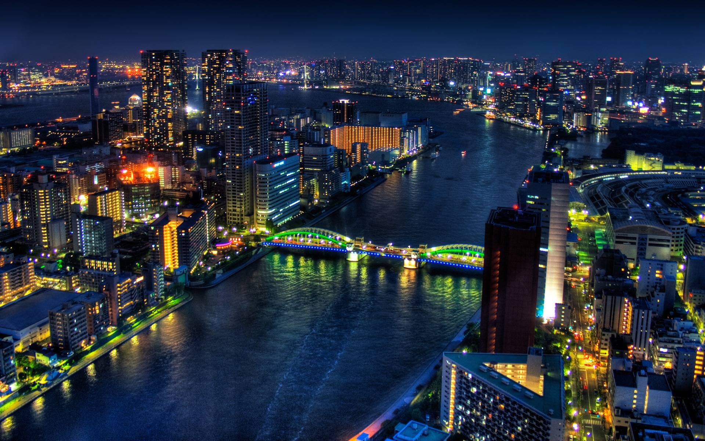

Many people typically go to Tokyo because it is the capital city of Japan. Tokyo is well-known for their many traditional Japanese dishes such as sushi, Yakitori (grilled chicken skewers), ramen noodles, Okonomiyaki, and many more. Tokyo is also famous for its many shopping districts since the Tokyo street fashion is very popular.
https://www.google.com/url?sa=i&rct=j&q=&esrc=s&source=images&cd=&cad=rja&uact=8&ved=0ahUKEwi36oWo_-jWAhVL12MKHWTVCg8QjRwIBw&url=https%3A%2F%2Fwww.pinterest.com%2Fpin%2F853854410572397672%2F&psig=AOvVaw1HRfU4ElPkDsMpuN6_hcyC&ust=1507825893146664